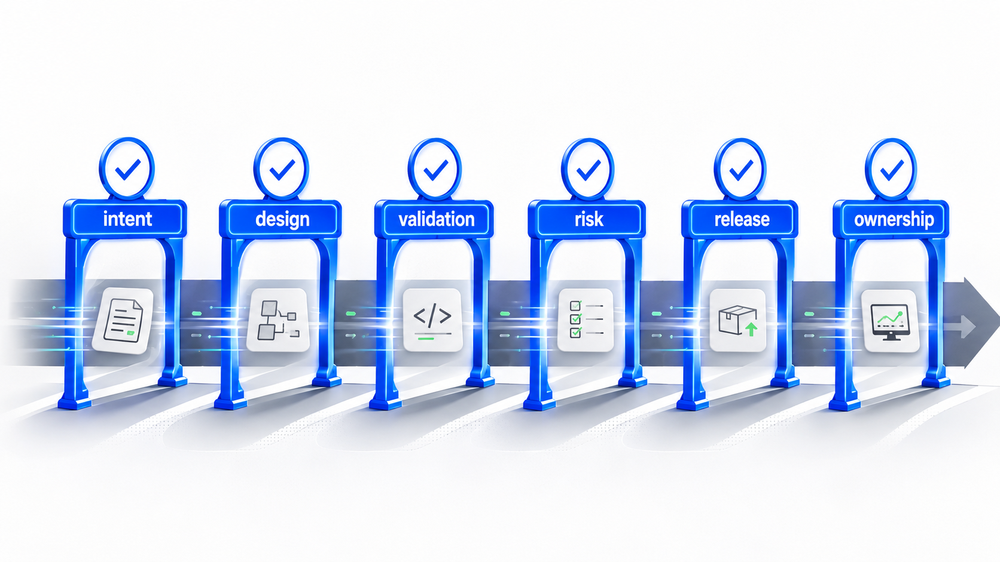
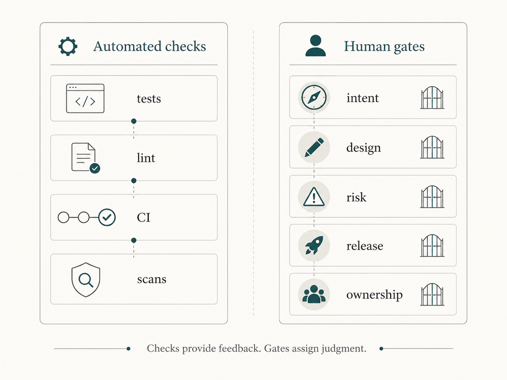
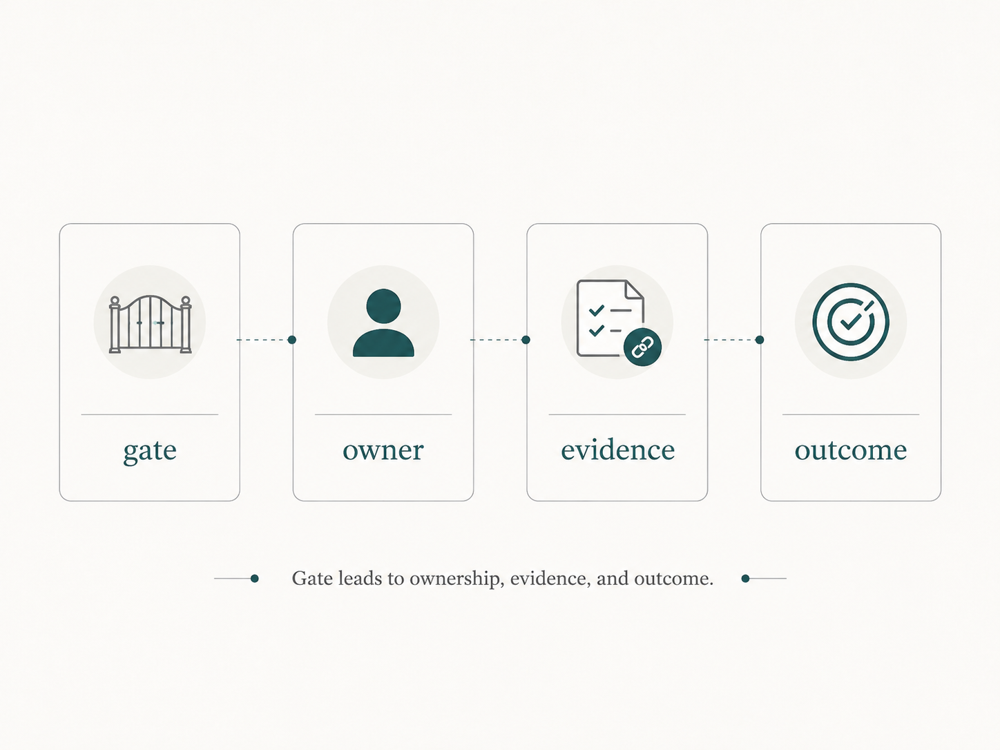

The workflow looked faster than anything the team had used before.
An AI assistant helped refine the ticket. Another assistant suggested an implementation plan. A coding agent changed the files. A test agent generated unit tests. A documentation agent updated the README. A review assistant summarized the pull request and pointed out a few possible issues.
By the end of the day, the team had a complete-looking change.
But a simple question made everyone pause:
Who approved the important decisions?
Who confirmed that the requirement was the right one? Who accepted the architecture trade-off? Who checked whether the generated tests proved the behavior that mattered? Who reviewed the security and compliance risk? Who decided the rollout was safe? Who owned the production impact if the change went wrong?
The AI tools had produced artifacts.
The team still needed humans to make decisions.
That is the role of human review gates in AI-assisted delivery.
A review gate is not a meeting for its own sake. It is not a rubber stamp. It is not a way to slow down every change. A useful review gate is a clear decision point where a human accepts, rejects, redirects, or escalates the work based on context, evidence, and risk.
This is different from an automated check. A test, linter, scanner, or CI job can provide feedback. A human review gate assigns judgment.
AI can draft code, tests, documentation, comments, plans, and pull requests. It can summarize logs, suggest fixes, compare a diff against acceptance criteria, and prepare release notes.
But humans remain responsible for intent, risk, architecture, security, compliance, production readiness, and accountability.
Why review gates matter more with AI
AI lowers the cost of producing software artifacts.
That is useful. It can reduce blank-page effort, speed up routine changes, generate test candidates, and help reviewers see a change from multiple angles.
But faster artifact production can blur decision ownership.
When an assistant drafts requirements, the text may look complete before the team has agreed on the real problem. When an agent proposes a design, the diagram may look clean before anyone has accepted the trade-offs. When generated code compiles, the team may treat implementation as further along than the thinking behind it. When generated tests pass, the team may assume validation is stronger than it is.
This does not mean AI is the problem.
It means the workflow needs clearer control points.
In traditional delivery, many decision points are implicit. A senior engineer pushes back in planning. An architect questions an integration. A security reviewer notices a logging risk. An on-call engineer asks how rollback will work. A release owner delays deployment because monitoring is weak.
AI-assisted delivery makes these decision points easier to skip because the artifacts arrive sooner and look polished.
Human review gates make the decisions explicit.
Gate 1: Requirements and intent
The first gate is not code.
It is intent.
Before AI starts producing implementation artifacts, someone needs to approve what problem the team is solving.
At this gate, humans should check whether the user or business problem is clear, whether important business rules are visible, whether acceptance criteria are specific, whether non-goals are stated, and whether open questions remain.
An AI assistant can help refine a ticket. It can propose acceptance criteria, identify missing business rules, and suggest edge cases. That is useful.
But AI should not silently decide what the business wants.
If the requirement is vague, the assistant will often fill the gap. It may produce a convincing version of the requirement that nobody actually approved.
The human decision at this gate is simple:
Do we understand the change well enough to design or implement it?
If the answer is no, the right action is not better code generation. It is clarification.
Gate 2: Design and architecture
The next gate is design.
This matters when the change affects module boundaries, data flow, public APIs, integration behavior, storage, security, observability, or operational support.
AI can produce design options quickly. It can compare patterns, draft ADRs, outline interfaces, and identify impacted files. But a design option is not an accepted design.
Humans should approve system boundaries, data ownership, API contracts, dependency direction, rejected alternatives, operational constraints, security and privacy implications, migration concerns, and backward compatibility risks.
This does not mean every small change needs architecture review.
It means the workflow should be clear about when a design decision has been made and who made it.
For a small UI text change, this gate may be unnecessary. For a payment workflow, authorization rule, data migration, or shared platform change, skipping it is risky.
The human decision at this gate is:
Is this the right design direction, and are the trade-offs acceptable?
Gate 3: Implementation
The implementation gate is the one teams already recognize most easily.
It is the code review gate.
But in AI-assisted delivery, implementation review is not just checking whether the code is readable. The reviewer should also check whether the implementation stayed inside the approved scope.
Google's public code review guidance is a useful reminder that review covers design, functionality, complexity, tests, naming, comments, style, and documentation. AI-assisted implementation review needs all of that, plus attention to generated assumptions and scope drift.
AI agents can be very helpful. They can also be too helpful. A small bug fix can become a refactor. A validation change can touch shared behavior. A documentation update can invent behavior. A test failure can lead an agent to weaken an assertion instead of fixing the underlying issue.
At the implementation gate, humans should ask whether the code matches the approved intent, whether the agent changed only what was needed, whether architecture boundaries are preserved, whether generated summaries are accurate, and whether the diff is reviewable.
AI review tools can help. They can summarize the diff, identify broad changes, compare code against acceptance criteria, and suggest missing tests.
But an AI review is not approval.
The human decision at this gate is:
Is this implementation correct, maintainable, and appropriately scoped?
Gate 4: Testing and validation
Testing is another place where AI can create false confidence.
Generated tests may look structured. They may increase coverage. They may pass.
That does not mean they prove the behavior that matters.
At the testing gate, humans decide whether the validation path is strong enough for the risk.
Do the tests cover the intended behavior? Do they cover edge cases and failure paths? Do they check exact outcomes or vague success? Do they protect against the old bug? Do they cover business rules and security-sensitive behavior? Were the right tests actually run?
The key distinction is simple:
AI can generate test code.
Humans must decide whether the tests provide enough confidence.
For low-risk changes, unit tests and CI may be enough. For higher-risk changes, the validation path may need contract tests, integration tests, security tests, performance checks, migration rehearsal, or manual domain review.
The human decision at this gate is:
Do we have enough evidence that the change behaves correctly?
Gate 5: Security, compliance, and policy
Some changes need a dedicated risk gate.
This is especially true for authentication, authorization, customer data, payments, privacy, audit logs, data retention, encryption, dependencies, infrastructure, and compliance-sensitive workflows.
AI can help identify security concerns. It can scan for obvious issues, summarize data flow, check for missing validation, and draft audit notes. But it should not accept security or compliance risk for the organization.
At this gate, humans should approve authentication and authorization behavior, sensitive data handling, logging and audit requirements, dependency or license concerns, privacy and retention rules, compliance obligations, and policy exceptions.
NIST's AI Risk Management Framework is useful here because it frames AI risk management around context, governance, mapping, measurement, and management. The practical point for software teams is not to add ceremony everywhere. It is to make risk decisions explicit where they matter.
The human decision at this gate is:
Are the security, privacy, compliance, and policy risks understood and acceptable?
Gate 6: Release readiness
Passing tests does not mean production readiness.
This is one of the easiest mistakes in AI-assisted delivery. Because AI can generate code and tests quickly, teams may feel the change is ready as soon as CI passes.
But production has more questions.
Is the change backward compatible? Is rollout staged or all at once? Is there a feature flag? Is rollback possible? Are dashboards and alerts ready? Are support teams aware? Are migration steps safe? Who is watching after release?
AI can draft release notes, generate rollout plans, suggest monitoring, and prepare support documentation. That is useful preparation.
But the release decision belongs to humans.
For a small internal change, release approval may be lightweight. For a migration, payment change, customer notification flow, or security-sensitive release, it should be explicit.
The human decision at this gate is:
Are we ready to put this change in front of production reality?
Gate 7: Operations and learning
The last gate happens after release.
AI-assisted delivery should not end when the pull request merges.
Humans still need to inspect production signals, incidents, support feedback, and follow-up work. If the change caused confusion, missed a rule, produced weak tests, or relied on stale documentation, the team should feed that learning back into the system.
At the operations gate, humans should ask whether the change behaved as expected, whether monitoring caught the right signals, whether support had the right information, whether an incident exposed missing context, and whether a runbook, test, ADR, business rule, or repository instruction should be updated.
AI can summarize incidents, cluster logs, draft follow-up tasks, and propose documentation updates.
Humans decide what the organization learned.
The human decision at this gate is:
What should change in our system so the next delivery is safer?
Automated checks are not review gates

Automated checks matter.
Tests, linters, type checks, dependency scans, secret scans, policy checks, branch protection, and required status checks all make delivery safer.
GitHub features such as protected branches, CODEOWNERS, and pull request templates are useful because they help route work through the right checks and people.
But automated checks are not the same as human review gates.
Checks answer repeatable questions:
- Does the code compile?
- Do tests pass?
- Is formatting consistent?
- Did a secret appear?
- Did coverage drop?
- Did a required owner approve?
Human gates answer judgment questions:
- Is this the right problem to solve?
- Is this design acceptable?
- Is this risk worth taking?
- Are the tests meaningful enough?
- Is the rollout safe?
- Who owns the remaining uncertainty?
Both are needed.
Checks provide feedback. Gates assign judgment.
Scale gates with risk
The danger is turning this into a heavy process for every change.
That would be a mistake.
A typo fix should not need a design gate, security gate, release gate, and operations review. A low-risk internal cleanup should stay lightweight.
The gate structure should scale with consequence.
Ask:
What happens if this change is wrong?
If the answer is minor inconvenience, keep the gates light. If the answer involves money movement, customer data, authorization, compliance, production reliability, irreversible operations, or customer communication, strengthen the gates.
Useful AI adoption is not about adding the same process everywhere.
It is about making the right human decisions visible at the right time.
A simple operating model

A practical model has four parts.
First, name the gate.
Do not hide approval inside vague phrases like "looks good." Say what is being approved: requirement, design, implementation, validation, security risk, release readiness, or operational follow-up.
Second, name the human owner.
The owner may be a product person, tech lead, architect, security reviewer, release owner, on-call engineer, or domain expert. The point is not hierarchy. The point is accountability.
Third, name the evidence.
What does the human use to decide? Ticket, acceptance criteria, ADR, diff, test results, security review, rollout plan, dashboard, incident note, or runbook?
Fourth, name the outcome.
Approve, reject, revise, escalate, or defer.
This model is simple enough to use without creating a governance program.
It also creates a useful record. Future engineers can understand what was approved, by whom, based on what evidence, and with what remaining risk.
Three practical takeaways
First, treat human review gates as decision points. AI can draft artifacts, but humans approve intent, design, risk, validation, release readiness, and production ownership.
Second, separate automated checks from human judgment. Checks are useful feedback. They do not decide whether a risk is acceptable.
Third, scale gates with consequence. Keep low-risk changes light. Make high-risk changes explicit, reviewable, and owned.
Where does a human say yes?
AI-assisted delivery can make software teams faster.
But speed is not the same as control.
If AI drafts the requirement, proposes the design, writes the code, generates the tests, updates the docs, and prepares the pull request, the team still needs to know where humans make decisions.
Where does a human say yes to the requirement?
Where does a human say yes to the design?
Where does a human say yes to the tests?
Where does a human say yes to security risk?
Where does a human say yes to release readiness?
Where does a human say yes to production ownership?
Those questions are not bureaucracy.
They are engineering discipline.
Useful AI adoption does not mean fewer human decisions.
It means clearer human decision points.